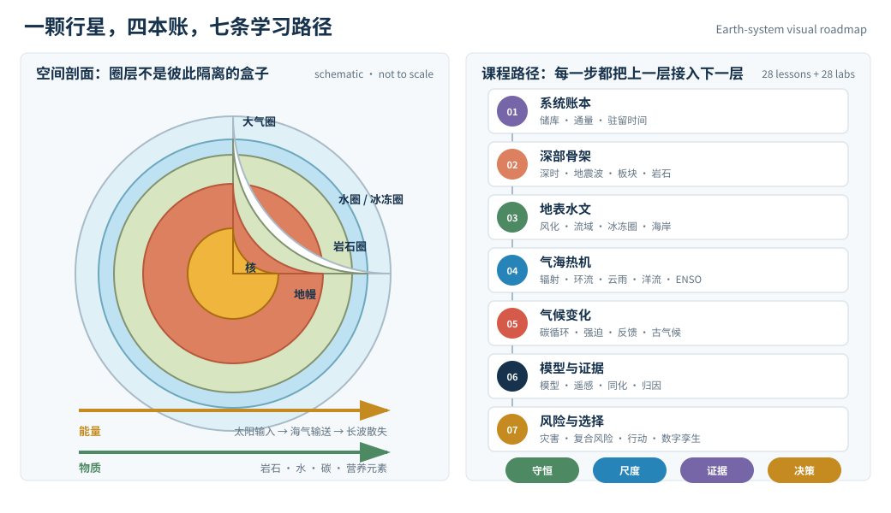
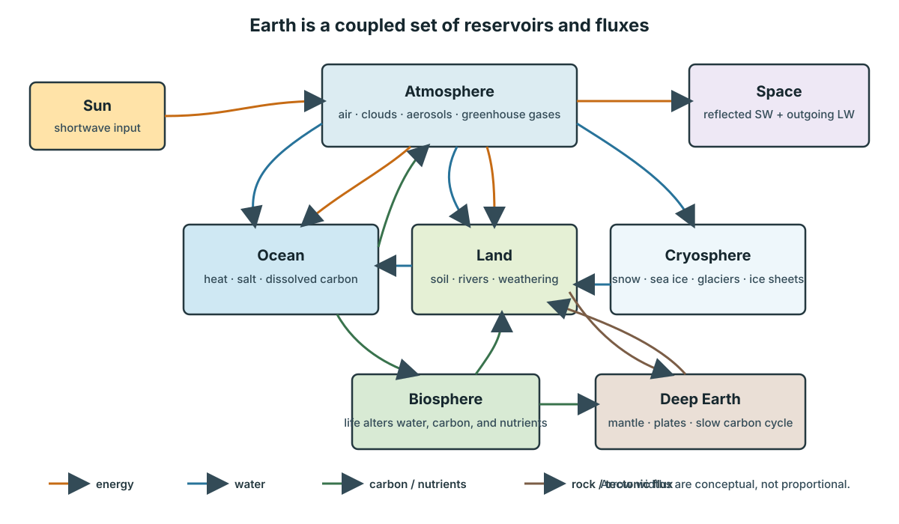

怎么读这门课
地球不是一颗放着气候的石头，而是一台同时流动着岩石、水、空气、冰、碳和生命的非平衡机器。本课从储库、通量、守恒与反馈出发，把地质学、气象学、海洋学、水文学和气候科学拼成一个可计算、可观测、也可证伪的系统。
一、这门课真正在问什么
最常见的地球科学课程像一排陈列柜：这边是矿物，那边是云，后面又出现洋流和冰川。名词都对，但学习者不容易看到它们为什么属于同一门学科。
本课始终追问四件事：
- 存在哪里：能量、水、碳、盐和岩石分别存在哪些储库？
- 如何流动：它们以多大通量在储库之间交换？
- 什么会放大或抑制变化：反馈的符号、强度和时滞是什么？
- 怎样知道自己没猜错：观测、代理记录、模型和自然实验如何互相校验？
这四问把地幔对流、河流地貌、ENSO、碳循环和气候归因放进了同一个语法。
二、七条线的课程地图

| 线 | 页面 | 主问题 |
|---|---|---|
| 行星的骨架与时间 | 01–05 | 怎样从通量和地质档案读出一颗不断重塑自己的行星？ |
| 被水重写的地表 | 06–09 | 风化、流域、地下水、冰与海岸怎样共同雕刻地形？ |
| 大气与海洋的热机 | 10–14 | 太阳能如何在旋转球面上变成风、云、洋流和年际振荡？ |
| 气候为什么会变 | 15–19 | 碳、生态、辐射强迫、反馈与慢响应如何决定气候轨迹？ |
| 从方程到证据 | 20–23 | 气候模型、卫星、再分析、反演与归因分别能证明什么？ |
| 风险、选择与行星比较 | 24–27 | 怎样把 hazard、exposure 与 vulnerability 分开，并将决策边界写清？ |
| 数字孪生收官 | 28 | 如何为一个真实流域建立可追溯、可更新、不越界的系统模型？ |

三、三层阅读法
直觉层把复杂过程压缩成一幅因果图：例如“暖海水 → 更深混合层需要更多能量 → 表层响应有时滞”。
定量层保留单位和守恒式。每页至少有一个能计算的账本，不把“增加”“改变”“显著”当成免费的结论。
证据层把直接观测、间接代理、物理模型和场景假设分开。一条曲线的漂亮程度不能代替数据来源、时间窗口、尺度和不确定度。
每页的“学习层”都按同一节奏组织：具体情境 → 揭示前预测 → 正式公式 → 交互实验 → 失效边界 → 迁移问题。可切换“学习/速查”模式，但第一遍最好不要跳过预测门。
四、三种时间尺度不能混在一起
| 尺度 | 典型过程 | 课程处理 |
|---|---|---|
| 秒到年 | 天气、径流、海洋混合、ENSO | 用时间序列、守恒式和受迫振荡理解 |
| 十年到千年 | 海洋吸热、冰盖、土壤碳、植被迁移 | 显式写出惯性、路径依赖和内部变率 |
| 百万到亿年 | 板块、山脉、慢碳循环、行星演化 | 借助地层、同位素、岩石和行星比较重建 |
把一次暴雨直接当成长期气候趋势，或把百年观测直接外推到千万年，都是尺度错误。
五、与已有课程的分工
| 已有站点 | 它负责的地基 | 本课向前走的一步 |
|---|---|---|
| 物理学 | 流体、热力学、辐射、连续介质、计算 PDE | 把它们装进真实行星的多圈层耦合问题 |
| 数学/研究生数学 | 微分方程、随机过程、逆问题、数值分析 | 说明什么数据真能约束参数，什么只是模型选择 |
| 生命科学 | 细胞、遗传、演化和生态机制 | 把生物圈当成地球化学通量的主动参与者 |
| 自动控制 | 反馈、稳定性、估计与鲁棒性 | 区分物理反馈、管理控制和不可控的边界 |
| 计算机/AI | 高性能计算、机器学习、数据工程 | 审计数据同化、代理模型和地球数字孪生的证据责任 |
六、证据、更新与不确定性约定
- 稳定机制，如板块边界的几何、Clausius–Clapeyron 关系、流体守恒式，以教材、综述和原始定律为主。
- 会变的观测数字，如年平均温度、温室气体浓度、海洋热含量、冰川质量和剩余碳预算，必须标记指标年、基准时段、不确定度和核对日期。
- 场景不是预言。输入假设不同，输出范围就不同；不会把一条场景曲线写成已经注定的未来。
- 风险不等于危险性。一个物理事件只是 hazard；还要与 exposure 和 vulnerability 共同作用，才成为社会风险。
动态页面的资料基线为 2026-09-01。优先使用 IPCC 评估报告、WMO 年度状态报告、NASA/NOAA/USGS 观测与数据文档，不用产品宣传或二手新闻代替数据。
七、前置与最小阅读路径
不要求地球科学基础。高中物理、化学和地理足以开始；遇到微分方程、概率和线性代数时，页内会保留直觉桥梁。
时间有限时先读：01 系统账本 → 04 板块构造 → 10 辐射平衡 → 13 海洋环流 → 15 碳循环 → 19 敏感度 → 20 模型 → 23 归因 → 28 收官。这九页构成一个最小闭环。
八、课程基准资料
- IPCC AR6 Synthesis Report — 物理基础、影响、适应与减缓的综合评估。
- WMO State of the Global Climate 2025 — 当前气候指标的年度状态报告。
- NASA Earth facts and Earth science — 行星基本量、圈层和观测入口。
- NOAA Carbon Cycle — 碳储库、通量与观测教学资源。
下一页先不背任何圈层名称。我们只拿出一个有输入、输出和储量的水库，学会地球系统最核心的句法。